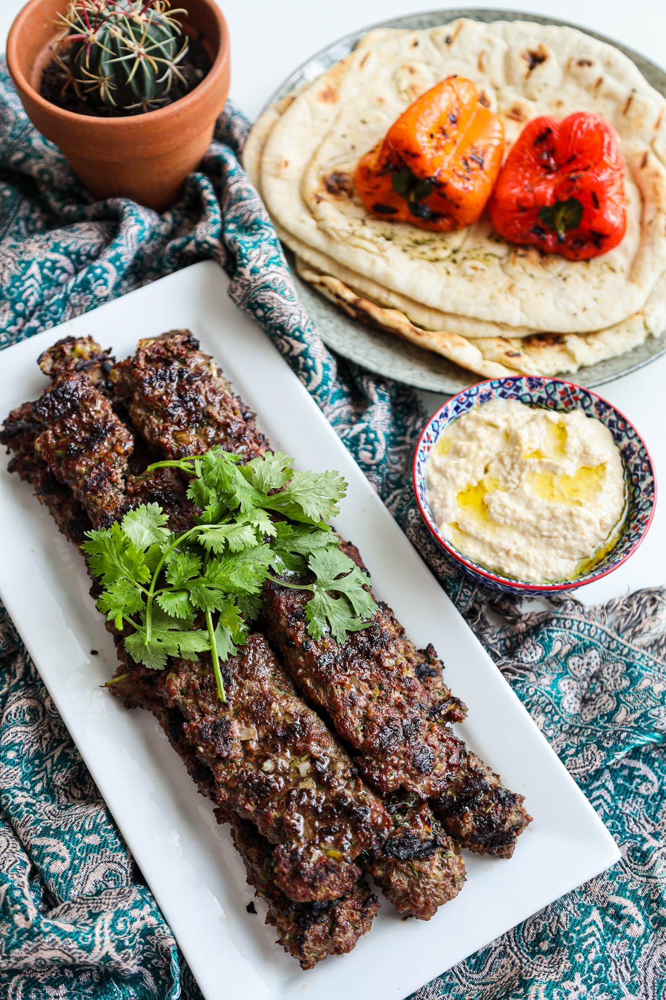

Adana Kebab Recipe

Description
Adana Kebab is a Turkish dish prepared with lamb mince seasoned with sumac, chili and parsley that is chargrilled and typically served with flatbread, Turkish salad called zerzavat and a garlic yogurt dip.
Ingredients
- 2 lbs minced lamb (20% fat)
- 1/3 cup yogurt
- 1/3 cup chopped parsley
- 4 tsp sumac
- 4 tsp dried red chili flakes
- 2 tsp smoked paprika
- 2 tsp freshly ground black pepper
- 4 tsp cumin powder
- 1/2 tsp cinnamon
- 1 large onion, finely chopped
- 1 tbsp grated ginger
- 3 cloves garlic minced
- 1 tbsp salt
Garlic Yogurt Sauce
- 2 cups yogurt
- 1/3 tablespoon lemon juice
- 6 cloves garlic
- 1 tsp garlic powder
- 1 tsp salt
Steps
- Place all kebab ingredients in a food processor then pulse until it is well incorporated.
- Remove from the food processor and place in a large container, using your hands knead the meat until sticky in texture. Cover container with clingwrap then let it rest overnight in the refrigerator.
- Moisten your hand with water and divide mixture into 6 to 8 equal parts. Using long flat skewers, mould a long and flat kebab on it, add grooves into the surface using your fingers.
- Light up a charcoal grill and once charcoals have white-grey ash around it you are ready to cook the kebabs. Place your kebabs on the grill and cook for a few minutes on each side until charred, do not overcook it so it won’t be dry. You can grill the capsicums on the side.
- Prepare your kebabs by serving it on top of the flatbread so it absorbs the dripping juices, enjoy it with the grilled capsicum, Garlic Yogurt Sauce and Hummus.
Main Page